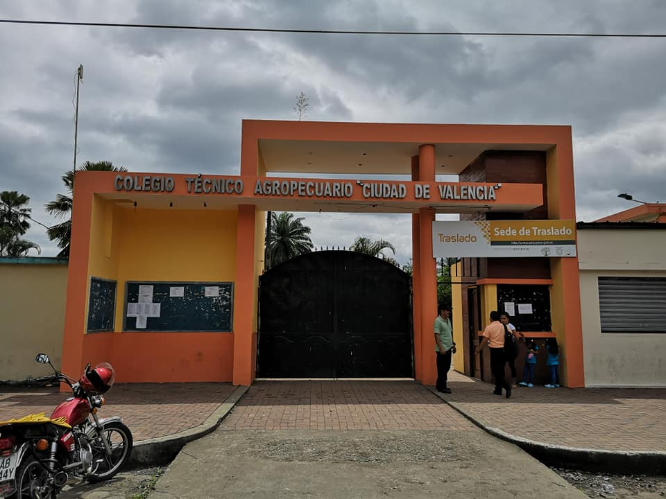
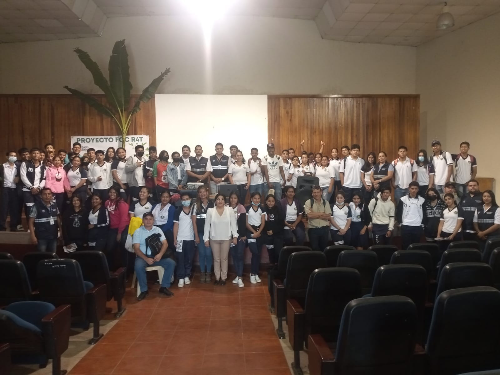
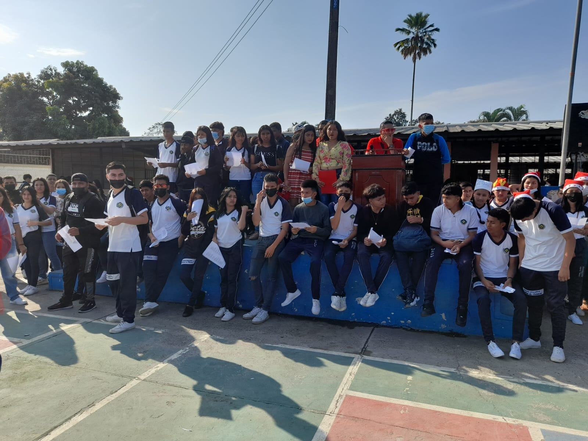

Reseña historica
Fue gestionado por el padre Ignacio Albizu y la fundación de damas de la caridad de la parroquia valencia,hoy cantón y su fundación como el colegio nacional técnico agropecuaria fue aprobada mediante acuerdo ministerial numero 1161 de septiembre 7 de 1973,por el ministerio de educación,autorizando el funcionamiento del primer curso de ciclo básico,sección diurna,el año lectivo 1973-1974,otorga el nombramiento a 3 profesores fiscales y cada año lectivo fue incrementado el numero de curso, numero de estudiante y el numero de docente titulares en la institución logrando tener un acuerdo ministeriales en la especialidad AGROPECUARIA, SECRETARIADO BERLINGUE Y CONTABILIDAD.
teniendo la primara promoción de bachilleres técnicos agropecuarios en el años 1978-1979.
en el año lectivo 1981-1982,la primera promoción de secretariado berlingue y en el año lectivo 1986-1987 la primera promoción de contabilidad.

VISION
La Unidad Educativa Ciudad de Valencia, será de alta categoría por la calidad de enseñanza de los docentes, hacia los estudiantes con el esfuerzo de todos, se logrará constituirse en un ámbito académico productivo por su coherencia en la formación integral, con un alto sentido de identidad, solidaridad, responsabilidad e integridad, con pensamiento crítico y reflexivo en aras de una sociedad vinculada con el desarrollo educativo, creativo e innovador.

MISION
Formar bachilleres técnicos en producción y ciencias generales, con sólidos conocimientos teóricos prácticos, capaces de contribuir al cuidado del ambiente y al desarrollo local y nacional; integrándose al trabajo formativo académico y productivo, siendo emprendedores e innovadores; para lo cual cuenta con profesionales calificados académicamente y capacitados en pedagogía, asistencia psicopedagógica del departamento de consejería estudiantil (DECE), recursos materiales, logísticos, tecnológicos, académicos y espacios físicos agradables, disponiendo de unidades de producción agropecuaria y procesamiento de transformados y elaborados cárnicos.

RECTORA

INSPECTOR GENERAL

VICERECTORA